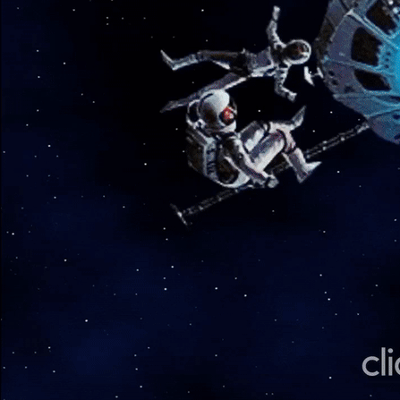

El Álbum
10 tracks que redefinen los límites entre el pop-rock y la electrónica. Una experiencia sonora única que combina la esencia de Tan Biónica con la innovación de Bizarrap.

Información del Álbum
Artistas: Tan Biónica x Bizarrap
Género: Pop-Rock / Electronic / Trap
Duración: 42 minutos
Tracks: 10
Producido por: Bizarrap
Grabado en: Buenos Aires, Argentina
Año: 2024
Tracklist Completo
01. Intro: La Noche Biónica de Bizarrap
Una introducción atmosférica con vocales glitcheados y ecos de "Ciudad Mágica". Sintetizadores ambientales preparan el terreno para la fusión épica.
Duración: 2:15
02. Electric Pastillas (Original Collaboration)
El himno principal del álbum. Guitarras de Tan Biónica se encuentran con los beats trap de Bizarrap. La voz de Chano navega entre melodías pop y flows urbanos.
Duración: 4:32
03. Bzrp Music Sessions, Vol. 58 (ft. Chano)
Chano en una sesión íntima con el toque característico de Bizarrap. Letras introspectivas sobre la vida, el amor y la música, con auto-tune sutil.
Duración: 3:47
04. Mis Noches de Cumbia (Mashup: "La Noche" vs. BZRP Cumbia Trap Beat)
Un remix revolucionario de "La Noche" con elementos de cumbia-trap. Bajo pesado, percusión reggaeton y la magia nocturna de Buenos Aires.
Duración: 4:18
05. Ciudad Mágica (Remix BZRP)
El clásico de Tan Biónica reimaginado para la pista de baile. 808s futuristas, sintetizadores espaciales y la esencia porteña intacta.
Duración: 5:02
06. Beautiful Day & Friends (Original Collaboration)
Una colaboración experimental con artista invitado. Tempo medio, elementos electrónicos ambientales y una melodía que se queda en la cabeza.
Duración: 4:25
07. Destinología V2.0 (Mashup: "Destinología" vs. BZRP Electro Pop Beat)
"Destinología" transformada en un himno electro-pop. Sintetizadores pulsantes, beats modernos y la filosofía de Tan Biónica.
Duración: 4:08
08. Pétalos y Beats (Original Collaboration)
Una balada melancólica que combina acústica y electrónica. Letras sobre amor y pérdida con la producción emotiva característica de ambos artistas.
Duración: 4:45
09. Ella (BZRP Reimagined)
Una reinterpretación oscura y trap/R&B de "Ella". Bajo profundo, atmósfera nocturna y la emotividad de Chano en su máxima expresión.
Duración: 4:12
10. El Vals del Apocalipsis Sonoro (Original Collaboration / Outro)
El cierre cinematográfico del álbum. Orquestación electrónica épica que combina elementos clásicos con beats futuristas. Una despedida memorable.
Duración: 6:33
Escucha las Muestras
Previews de 30 segundos disponibles para cada track
🎵 Reproductor de Muestras
Reproduciendo: Electric Pastillas (Original Collaboration)
0:45 / 4:32
👨💻 Desarrollo Web
Esta experiencia digital del álbum fue desarrollada por
Albert Lukmanov
Especialista en desarrollo frontend con HTML5, CSS3 y JavaScript. Creando experiencias web inmersivas y responsivas para la música moderna.
¿Te Gusta Lo Que Escuchas?
Asegura tu copia del álbum completo y accede a la edición limitada de colección.